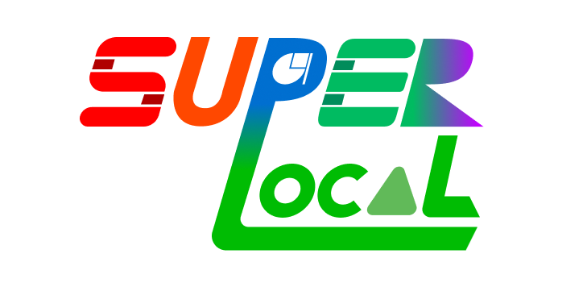

Like a playground.
"프로젝트 SuperLocal"은 다양한 지역들을 참고하고 영감을 얻어,
그 지역의 특산품이나 상징을 모티브로 한 ‘즐겁고 자유로운 놀이터 같은 게임’을 만드는 프로젝트입니다.
"Project SuperLocal" is a creative initiative that draws inspiration from the unique charm and symbols of different regions,
reimagining them into playful, game-like experiences that anyone can enjoy.
Main Projects
Other Projects
SkagoGames 2026. made in Skago.